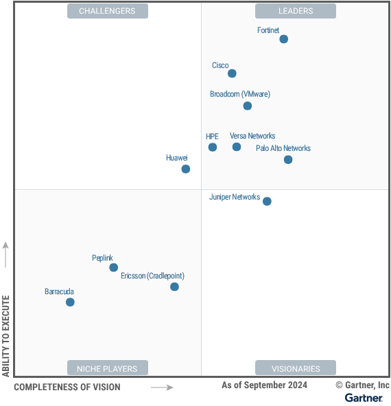

请访问原文链接：Gartner Magic Quadrant for SD-WAN 2024 查看最新版。原创作品，转载请保留出处。
作者主页：sysin.org
Gartner 魔力象限：SD-WAN 2024
Published 30 September 2024
魔力象限
软件定义广域网市场已经成熟，但厂商之间仍存在分化。负责网络的基础设施和运营领导者应利用这项研究来确定最符合其分支机构连接和安全要求的 SD-WAN 供应商。
战略规划假设：
到 2027 年，65% 的新 SD-WAN 采购将成为单一供应商安全访问服务边缘 (SASE) 产品的一部分，这一比例较 2024 年的 20% 有所增加。
到 2027 年，70% 的网络运营人员将依靠生成式 AI 进行第 2 天 SD-WAN 管理，而 2024 年初这一比例还不到 5%。
市场定义/描述：
本文档于 2024 年 10 月 3 日重新发布。您当前查看的文档是更正后的版本。
Gartner 将 SD-WAN 定义为主要用于将分支机构位置连接到其他企业和云位置的功能。SD-WAN 产品提供基于业务或应用程序策略、路由、集中策略编排和设备管理、虚拟专用网络 (VPN) 和零接触配置的动态路径选择 (sysin)。SD-WAN 产品与 WAN 传输/运营商无关，可跨物理 WAN 连接创建安全路径。
SD-WAN 产品取代了传统的分支路由器，并支持企业分支位置与云之间的连接。它们促进 WAN 连接从以多协议标签交换 (MPLS) 为中心演变为以公共互联网为中心，以支持企业流量从私有数据中心转移到公共云和 SaaS。
必备功能：
SD-WAN 产品的强制性功能包括:
- 功能性:
- 能够更换分支路由器（例如，支持边界网关协议 [BGP]）
- 跨多个物理接口的应用感知动态路径选择（例如，第 7 层流量引导）
- 虚拟专用网络 (VPN)
- Orchestrator（本地或云端）提供集中式机制：
- 配置（零接触配置）
- 管理 (sysin)
- 可见性/分析/故障排除
- 报告
- 分支机构、数据中心和云位置的外形规格：
- 可部署在分支机构、数据中心或其他企业位置的品牌硬件设备或第三方硬件上的软件
- 作为虚拟实例部署在公共云中的软件
共同特点：
SD-WAN 产品的常见功能包括：
- 集成第 4 层防火墙、入侵检测系统 (IDS)/入侵防御系统 (IPS)、URL/内容过滤和反恶意软件
- 作为虚拟网络功能 (VNF)、虚拟机 (VM) 或容器交付的软件
- 品牌交钥匙硬件设备
- API 支持 (sysin)
- 服务链能力（包括与第三方 SSE 供应商集成的能力）
- 应用程序性能优化功能（例如，前向纠错 [FEC]、数据包复制和 SaaS 优化）
- 与云服务提供商的编排和集成以简化云入口
- 高级本地安全（例如，第 7 层防火墙和数据丢失防护 [DLP]）
- 用于服务插入和简化的云入口连接的本机云网关
- WAN 主干/增强的互联网功能
- WAN 优化（例如 TCP 优化、缓存和重复数据删除）
- 将编排扩展到 SD-WAN 之外，包括无线 LAN (WLAN)/LAN/安全性以形成 SD-Branch
- AI/GenAI 网络支持配置管理、事件管理和文档访问
- 可在最终用户设备上为远程用户部署的纯软件解决方案

领导者（Leaders）：
- Fortinet
- VMware
- Cisco
- Palo Alto Networks
- Versa Networks
- HPE
挑战者（Challengers）：见图
有远见者（Visionaries）：见图
特定领域者（Niche Players）：见图
查看完整报告（限期公开）：https://www.gartner.com/doc/reprints?id=1-2IXJ3QUP&ct=240927&st=sb
如何选择
在特定市场内定位技术参与者。
主要技术市场上有哪些竞争参与者？他们如何为您提供长期帮助？Gartner 魔力象限是对特定市场的巅峰研究，可帮您广泛了解市场竞争对手的相对位置 (sysin)。利用图示法和一系列统一的评估标准，魔力象限可帮助您快速确定技术提供商执行其既定愿景的情况，并参照 Gartner 的市场观点了解其表现。
如何使用 Gartner 魔力象限？
面对特定投资机会考虑技术提供商时，请借助 Gartner 魔力象限迈出第一步。
请记住，专注于领导者象限不一定是最好的行动方案。有充分的理由考虑市场挑战者。特定领域者可能比市场领导者更能满足您的需求。这完全取决于提供商如何与您的业务目标保持一致。
Gartner 魔力象限如何发挥作用？
面对快速增长和提供商差异化明显的众多市场，Gartner 魔力象限用图形化方法划分出四类提供商：
- 领导者很好地执行了当前愿景 (sysin)，并为未来做好了充分准备
- 有远见者了解市场发展方向，或者有改变市场规则的设想，但执行效果不尽如人意。
- 特定领域者成功专注于一个小的细分市场，或者目标不明确，创新和表现未能超越竞争对手。
- 挑战者当前表现很好，或者可能在大部分细分市场占据主导地位，但未表现出对市场方向的了解。
试用领导者产品
试用领导者产品：
- Fortinet：Fortinet FortiOS 7.6.5 (FortiGate VM deployment Images) - 混合架构防火墙
- VMware：VMware VeloCloud SD-WAN 6.4 - 领先的 SD-WAN 解决方案
- VMware：VMware VeloCloud SD-WAN 5.4 - 领先的 SD-WAN 解决方案
- Cisco：Cisco SD-WAN (Viptela) 20.15.5 MD | 20.18.2 ED - 思科软件定义广域网解决方案
- Palo Alto Networks：Palo Alto PAN-OS 11.2.8 VM-Series for ESXi, KVM & Hyper-V - ML 驱动的 NGFW
- HPE：暂无
- Versa Networks：暂无

文章用于推荐和分享优秀的软件产品及其相关技术，所有软件默认提供官方原版（免费版或试用版），免费分享。对于部分产品笔者加入了自己的理解和分析，方便学习和研究使用。任何内容若侵犯了您的版权，请联系作者删除。如果您喜欢这篇文章或者觉得它对您有所帮助，或者发现有不当之处，欢迎您发表评论，也欢迎您分享这个网站，或者赞赏一下作者，谢谢！
 支付宝赞赏
支付宝赞赏  微信赞赏
微信赞赏赞赏一下
敬请注册！点击 “登录” - “用户注册”（已知不支持 21.cn/189.cn 邮箱）。 请勿使用联合登录（已关闭）。